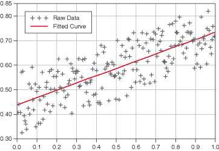

The technique of curve fitting analysis extracts a set of curve parameters or coefficients from a data set to obtain a
functional description of the data set.
In some applications, parameters such as humidity, temperature, and pressure can affect data you collect. You can model the
statistical data by performing regression analysis and gain insight into the parameters that affect the data.
The following figure shows a multiplot graph of the result of fitting a line to a noisy data set.

The practical applications of curve fitting include the following applications:
-
Removing measurement noise
-
Filling in missing data points, such as when one or more measurements are missing or improperly recorded
-
Interpolating, which is estimating data between data points, such as if the time between measurements is not small enough
-
Extrapolating, which is estimating data beyond data points, such as looking for data values before or after a measurement
-
Differentiating digital data, such as finding the derivative of the data points by modeling the discrete data with a polynomial
and differentiating the resulting polynomial equation
-
Integrating digital data, such as finding the area under a curve when you have only the discrete points of the curve
-
Obtaining the trajectory of an object based on discrete measurements of its velocity, which is the first derivative, or acceleration,
which is the second derivative